import matplotlib.pyplot as plt
import numpy as np
%matplotlib inline
plt.style.use('seaborn-whitegrid')
1. 配置图例
1.1 图例风格
plt.legend()命令会自动创建一个包含每个图形元素的图例，这些图例将根据图形元素的 color，style，marker，label生成：
x = np.linspace(-1, 1, 200)
func = lambda x: 2*x**3 - x**2 - 2*x
plt.figure(figsize=(8,6))
plt.plot(x, func(x), '-b', label='func')
plt.plot(x, func(x)*3, '--r', label='func * 3')
plt.axis('tight')
plt.legend()
<matplotlib.legend.Legend at 0x7f7ec2969550>
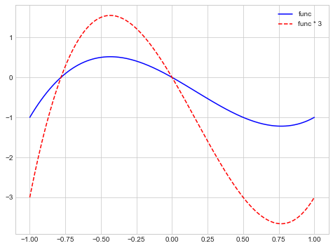
y_1 = 2*x + np.random.rand(*x.shape)*0.3
y_2 = x**2+np.random.randn(*x.shape)*0.3
plt.figure(figsize=(8,6))
plt.plot(x, y_1, 'rv', label='red')
plt.plot(x, y_2, 'bo', label='bule' )
plt.legend()
<matplotlib.legend.Legend at 0x7f7e817749a0>
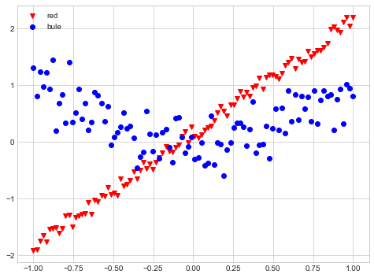
通过对 plt.legend 指定一些参数可以对图例进行个性化定制：
loc：设置图例的位置，先设置上下，再设置左右。有如下选项可选：best upper right upper left lower left lower right right center left center right lower center upper center centerframeon：bool，是否设置外框，frameon=False取消图例外框（默认），frameon=True设置图例外框ncol：int，设置图例的标签列数；fancybox：bool，是否设置圆角矩形图例外框；framealpha：float，图例透明度；shadow：bool，是否设置图例阴影borderpad：float，图例边缘标签的间距
plt.figure(figsize=(8,6))
plt.plot(x, func(x), '-b', label='func')
plt.plot(x, func(x)*3, '--r', label='func * 3')
plt.axis('tight')
legendstyle = {
'loc': 'lower center',
'frameon': True,
'fancybox': True,
'framealpha': 1,
'shadow': True,
'borderpad': 3,
'ncol': 2
}
plt.legend(**legendstyle)
<matplotlib.legend.Legend at 0x7f7e81b45eb0>
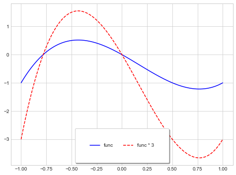
1.2 选择图例显示元素
有两种方法指定显示某些图形元素的图例：
1.2.1 为需要设置图例的线条设置标签
plt.legend会自动忽略不带标签的元素：
plt.figure(figsize=(8,6))
plt.plot(x, func(x), '-b', label='func')
plt.plot(x, func(x)*3, '--r', label='func * 3')
plt.plot(x, func(x)*5, ':g')
plt.axis('tight')
plt.legend(**legendstyle)
<matplotlib.legend.Legend at 0x7f7e81430700>
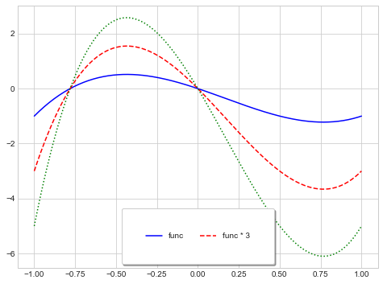
1.2.2 将需要显示的线条传入 plt.legend
每次 plt.plot 生成一个 plt.Line2D 实例对象，我们将所有的 plt.Line2D实例对象放在一个列表中，在通过索引的方式将其传入 plt.legend([line1, line2, ...], [label1, label2, ...])。
plt.figure(figsize=(8,6))
y = func(x[:, np.newaxis]) * np.arange(1, 6, 1)
lines = plt.plot(x, y)
plt.axis('tight')
(-1.1, 1.1, -6.53323878045311, 3.0145938145057247)
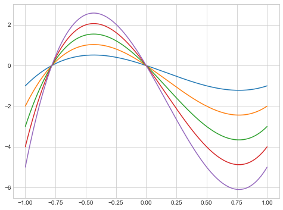
lines 是一组 plt.Line2D 实例，每个元素构成一条线：
lines
[<matplotlib.lines.Line2D at 0x7f7e810f6670>,
<matplotlib.lines.Line2D at 0x7f7e810f6580>,
<matplotlib.lines.Line2D at 0x7f7e810f6520>,
<matplotlib.lines.Line2D at 0x7f7e810f6a00>,
<matplotlib.lines.Line2D at 0x7f7e810f69a0>]
plt.figure(figsize=(8,6))
lines = plt.plot(x, y)
plt.legend(
[lines[0], lines[-1]],
['first', 'end'],
**legendstyle
)
plt.axis('tight')
(-1.1, 1.1, -6.53323878045311, 3.0145938145057247)
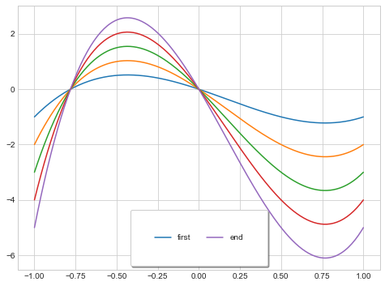
1.3 在图例中显示不同尺寸的点
若要对一个图形元素中的某些点显示图例，可以通过创建一些空图形元素来模拟这些点的性质（如 size,color 等）从而绘制图例。 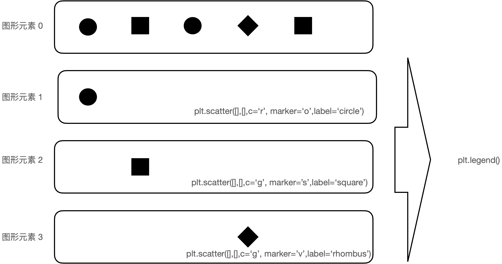
下面以加州各城市的地理位置、面积和人口数量数据为例展示。
import pandas as pd
cities = pd.read_csv('../PythonDataScienceHandbook-master/notebooks/data/california_cities.csv')
cities
| Unnamed: 0 | city | latd | longd | elevation_m | elevation_ft | population_total | area_total_sq_mi | area_land_sq_mi | area_water_sq_mi | area_total_km2 | area_land_km2 | area_water_km2 | area_water_percent | |
|---|---|---|---|---|---|---|---|---|---|---|---|---|---|---|
| 0 | 0 | Adelanto | 34.576111 | -117.432778 | 875.0 | 2871.0 | 31765 | 56.027 | 56.009 | 0.018 | 145.107 | 145.062 | 0.046 | 0.03 |
| 1 | 1 | AgouraHills | 34.153333 | -118.761667 | 281.0 | 922.0 | 20330 | 7.822 | 7.793 | 0.029 | 20.260 | 20.184 | 0.076 | 0.37 |
| 2 | 2 | Alameda | 37.756111 | -122.274444 | NaN | 33.0 | 75467 | 22.960 | 10.611 | 12.349 | 59.465 | 27.482 | 31.983 | 53.79 |
| 3 | 3 | Albany | 37.886944 | -122.297778 | NaN | 43.0 | 18969 | 5.465 | 1.788 | 3.677 | 14.155 | 4.632 | 9.524 | 67.28 |
| 4 | 4 | Alhambra | 34.081944 | -118.135000 | 150.0 | 492.0 | 83089 | 7.632 | 7.631 | 0.001 | 19.766 | 19.763 | 0.003 | 0.01 |
| ... | ... | ... | ... | ... | ... | ... | ... | ... | ... | ... | ... | ... | ... | ... |
| 477 | 477 | Yountville | 38.403056 | -122.362222 | 30.0 | 98.0 | 2933 | 1.531 | 1.531 | 0.000 | 3.966 | 3.966 | 0.000 | 0.00 |
| 478 | 478 | Yreka | 41.726667 | -122.637500 | 787.0 | 2582.0 | 7765 | 10.053 | 9.980 | 0.073 | 26.036 | 25.847 | 0.188 | 0.72 |
| 479 | 479 | YubaCity | 39.134722 | -121.626111 | 18.0 | 59.0 | 64925 | 14.656 | 14.578 | 0.078 | 37.959 | 37.758 | 0.201 | 0.53 |
| 480 | 480 | Yucaipa | 34.030278 | -117.048611 | 798.0 | 2618.0 | 51367 | 27.893 | 27.888 | 0.005 | 72.244 | 72.231 | 0.013 | 0.02 |
| 481 | 481 | YuccaValley | 34.133333 | -116.416667 | 1027.0 | 3369.0 | 20700 | 40.015 | 40.015 | 0.000 | 103.639 | 103.639 | 0.000 | 0.00 |
482 rows × 14 columns
lat, lon = cities.latd, cities.longd
popu, area = cities.population_total, cities.area_land_km2
plt.figure(figsize=(8,6))
plt.scatter(
lon, lat,
c=np.log10(popu),
cmap=plt.cm.RdBu,
s=area,
alpha=0.5
)
plt.axis('equal')
plt.xlabel('longitude')
plt.ylabel('latitude')
plt.title('California Cities: Area and Population')
plt.colorbar(label='log$_{10}$ (population)')
plt.clim(3, 7)
# 下面创建三个空图形元素，令其性质 size 模拟上面图形元素的三个点的 size，并为其创建 label
for area in [100, 300, 500]:
plt.scatter(
[], [],
c='k',
s=area,
label=f"{area} km$^2$"
)
plt.legend(
scatterpoints=1,
frameon=False,
labelspacing=1,
title='City Area'
)
<matplotlib.legend.Legend at 0x7f7e81c10fa0>
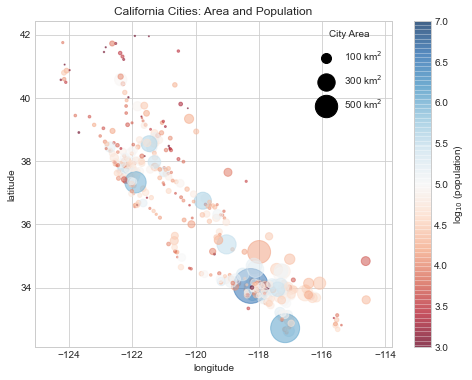
1.4 同时显示多个图例
可以通过创建一个Legend对象，并通过底层的 ax.add_artist() 方法再图上加第二个图例
lines = []
style = ['-r', '--g', '-.b', ':c']
x = np.linspace(0, 10, 1000)
fig = plt.figure(figsize=(8,6))
ax = plt.axes()
for i in range(4):
lines += ax.plot(
x, np.sin(x - i*np.pi/2),
style[i]
)
ax.axis('equal')
ax.legend(
lines[:2],
['line A', 'line B'],
loc='upper right',
frameon=False
)
# 创建第二个图例
from matplotlib.legend import Legend
leg = Legend(
ax, lines[2:],
['line C', 'line D'],
loc='lower right',
frameon=False
)
ax.add_artist(leg)
<matplotlib.legend.Legend at 0x7f7e906d7160>
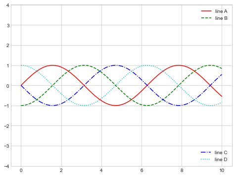
leg
<matplotlib.legend.Legend at 0x7fd58027f3d0>
2. 配置颜色条
可以通过 plt.colorbar() 命令创建一个颜色条。对于某些有很大的数值的数组，使用颜色条会使较小数值的信息缺失，这时可以通过 plt.clim() 对颜色条设置上下限；对于超出上下限的数据，通过 extend参数设置三角箭头来表示。
x = np.linspace(0, 10, 1000)
def func1(x, y):
z = x * (y-x)**2 * np.sin(x)
return z
z = func1(x, x[:, np.newaxis])
plt.figure(figsize=(15, 5.5))
plt.subplot(1, 2, 1)
plt.imshow(z, cmap=plt.cm.RdBu)
plt.colorbar()
plt.subplot(1, 2, 2)
plt.imshow(z, cmap=plt.cm.RdBu)
plt.colorbar(extend='both')
plt.clim(-10, 10)
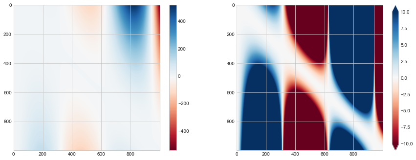
通过设置参数 cmap=plt.cm.get_cmap()可以获得离散型数据条，只需要将配送方案名称和区间数量传递进去即可
plt.figure(figsize=(8,6))
plt.imshow(z, cmap=plt.cm.get_cmap('RdBu', 6))
plt.colorbar()
plt.clim(-10,10)
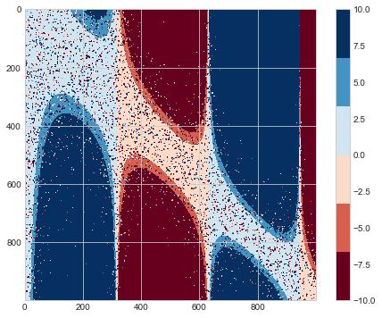
考虑 sklearn 中的手写数字案例。digits 中一共有 1083 个样本，每一个样本特征由 64 个像素构成，这些特征在digits.data 中。我们现在要通过可视化考察特征与目标之间的关系。
from sklearn.datasets import load_digits
digits = load_digits(n_class=6)
print(digits.keys())
print(digits.data.shape, digits.images.shape, digits.target.shape, '\n')
print(digits.data[0], '\n\n', digits.images[0])
dict_keys(['data', 'target', 'frame', 'feature_names', 'target_names', 'images', 'DESCR'])
(1083, 64) (1083, 8, 8) (1083,)
[ 0. 0. 5. 13. 9. 1. 0. 0. 0. 0. 13. 15. 10. 15. 5. 0. 0. 3.
15. 2. 0. 11. 8. 0. 0. 4. 12. 0. 0. 8. 8. 0. 0. 5. 8. 0.
0. 9. 8. 0. 0. 4. 11. 0. 1. 12. 7. 0. 0. 2. 14. 5. 10. 12.
0. 0. 0. 0. 6. 13. 10. 0. 0. 0.]
[[ 0. 0. 5. 13. 9. 1. 0. 0.]
[ 0. 0. 13. 15. 10. 15. 5. 0.]
[ 0. 3. 15. 2. 0. 11. 8. 0.]
[ 0. 4. 12. 0. 0. 8. 8. 0.]
[ 0. 5. 8. 0. 0. 9. 8. 0.]
[ 0. 4. 11. 0. 1. 12. 7. 0.]
[ 0. 2. 14. 5. 10. 12. 0. 0.]
[ 0. 0. 6. 13. 10. 0. 0. 0.]]
在 64 维特征空间中可视化很困难，因此我们需要对特征空间进行降维，这里通过流形学习进行降维。可以看到降维后特征为 2 维。
from sklearn.manifold import Isomap
iso = Isomap(n_components=2)
projection = iso.fit_transform(digits.data)
print(digits.data.shape, projection.shape, digits.target.shape)
(1083, 64) (1083, 2) (1083,)
将二维特征标注出来，并以颜色标注目标值：
plt.figure(figsize=(8,6))
plt.scatter(
projection[:, 0], projection[:, 1],
lw=0.1,
c=digits.target,
cmap=plt.cm.get_cmap('RdBu', 6) # cmap 将 c=digits.target 映射到颜色
)
plt.colorbar(ticks=range(6),label='digit value')
plt.clim(-0.5, 5.5)
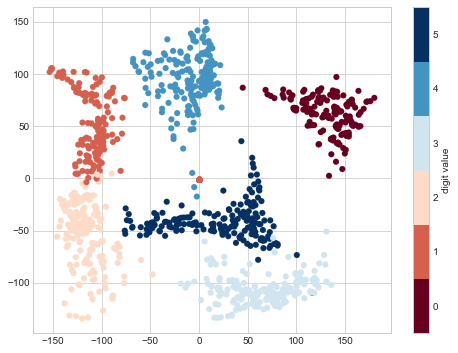